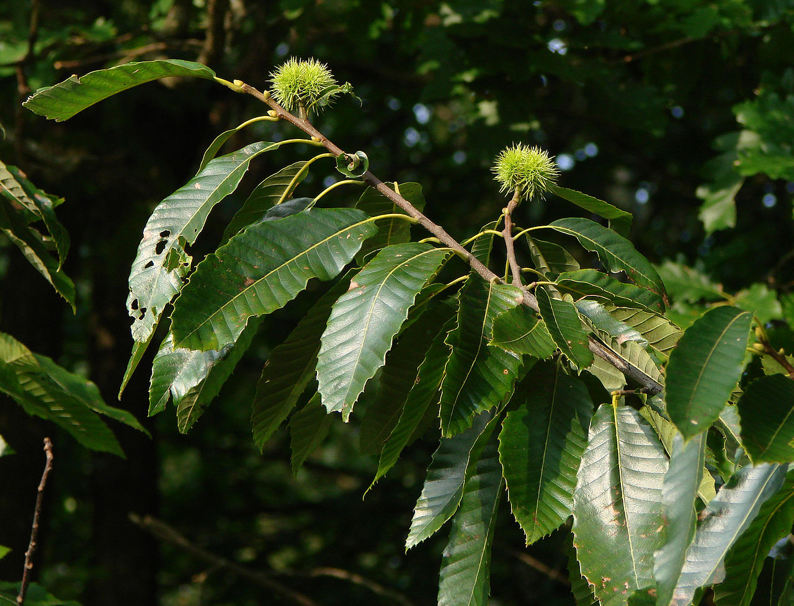
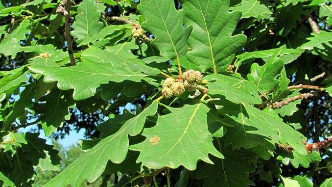

აკაცია (Acacia) — ეს არის ფოთლოვანი ან მარადმწვანე ხეებისა და ბუჩქების გვარი, რომელიც მიეკუთვნება პარკოსანთა
ოჯახს.
🌿 ძირითადი ინფორმაცია
- გავრცელება: აკაცია ფართოდ არის გავრცელებული აფრიკაში, ავსტრალიაში და აზიის ტროპიკულ რეგიონებში.
- სიმაღლე: სახეობების მიხედვით შეიძლება იყოს პატარა ბუჩქი ან 20 მეტრამდე სიმაღლის ხე.
- ფოთლები: ხშირად წვრილი, წაგრძელებული ან წყვილფრთიანი, ზოგიერთ სახეობაში ფოთლების ნაცვლად ფოთლისებრი ღეროები
(ფილოდიები) აქვს.
- ყვავილები: პატარა, მრგვალი ან წაგრძელებული ყვავილები, ყვითელი ან თეთრი შეფერილობით, რომლებიც გროვებად ან
მტევნებად ვითარდება.
- გამოყენება:
- დეკორატიული მცენარეა პარკებსა და ბაღებში.
- ზოგი სახეობა გამოიყენება ხის მასალისთვის.
- ეთერზეთებისა და სურნელოვანი ნივთიერებების წყაროა.
- აფრიკაში და ავსტრალიაში აკაციის ზოგი სახეობა სამკურნალო და საკვები დანიშნულებითაც გამოიყენება.
👉 აკაცია ცნობილია როგორც „მიმოზას“ მსგავსი ყვავილი, რომელიც გაზაფხულზე განსაკუთრებით ლამაზად ყვავის და ხშირად
ასოცირდება სითბოსა და მეგობრობასთან.
გსურს, რომ ჩამოგითვალო ყვ

🌳 ძირითადი ინფორმაცია
- სიმაღლე: საშუალოდ 20–35 მეტრამდე იზრდება.
- ფოთლები: დიდი, წაგრძელებული, დაკბილული კიდეებით.
- ყვავილები: გრძელ მტევნებად ვითარდება, თეთრი ან მოყვითალო შეფერილობით.
- ნაყოფი: წაბლი არის მრგვალი, მუქი ყავისფერი კაკალი, რომელიც ეკლიან გარსში იზრდება.
- გამოყენება:
- საკვები: მოხალული ან მოხარშული წაბლი პოპულარულია როგორც ტრადიციული კერძი.
- ხის მასალა: გამოიყენება ავეჯისა და სამშენებლო მასალისთვის.
- დეკორატიული: დიდი და ჩრდილოვანი ხეა, ხშირად გვხვდება პარკებსა და ბაღებში.

მუხა (Quercus) არის წიფლისებრთა ოჯახის წარმომადგენელი, ძლიერი და ხანგრძლივად მცხოვრები ხე, რომელიც საქართველოში
და მთელ მსოფლიოში ფართოდ არის გავრცელებული.
🌳 ძირითადი ინფორმაცია
- მუხა (Quercus) — ფოთლოვანი ან მარადმწვანე ხეების გვარია, რომელიც მოიცავს დაახლოებით 600 სახეობას.
- საქართველოში გავრცელებულია რამდენიმე სახეობა:
- ქართული მუხა (Quercus iberica)
- ჭალის მუხა (Quercus pedunculiflora)
- კოლხური ანუ ჰართვისის მუხა (Quercus hartwissiana)
- იმერული მუხა (Quercus imeretina)
- აღმოსავლური მუხა (Quercus marganthera).